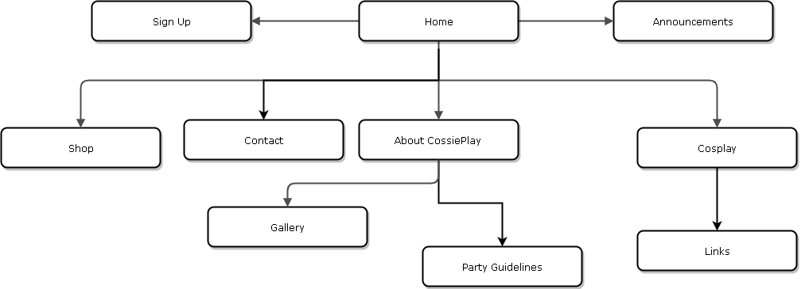

Name: Matthew Cabinian
Login: JC474421
Cossieplay has tasked me with creating a website so that their business is able to reach a bigger target audience.
The website is meant to showcase the services the business provides which is costume making and
hosting cosplay parties every 1st saturday of each month.
CossiePlay hopes that the website will improve their business with more people asking for custom costumes
and with more than 30 people attending their monthly party.
In order for the website to be successful, the website has to invite the target audience
to sign up for the parties and to order custom costumes or buy any available second hand costumes.
We measure the amount of people registered for parties and the amount of orders taken
CossiePlay's target audience are high schoolers and young adults with an age range of 16 to 25 or over.
CossiePlay chose this age range because most of high school students or young adults are usually socially awkward.
They believe that this hobby is really about having fun and being creative with your costume
and can allow this target audince to experience a huge community
